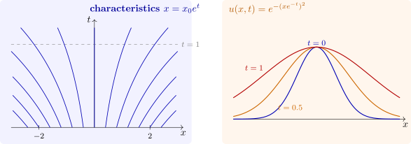

1.5 Variable speed and conservation laws
For \(u_t + c(x)u_x = 0\) the characteristics solve \(dx/dt = c(x)\). They no longer are straight, but \(u\) is still constant along each one, so \(u(x, t) = f(X(x, t))\), where \(X(x, t)\) is the foot at \(t = 0\) of the characteristic through \((x, t)\), found by integrating the ODE backwards.
Example 1.5.1. For \(u_t + xu_x = 0\), \(x' = x\) gives \(x = x_0e^t\), so \(X = xe^{-t}\) and \(u(x, t) = f(xe^{-t})\). The characteristics fan out from the origin and the profile is stretched by the factor \(e^t\) (Figure 1). The height of a peak is preserved, but its width grows.

There is an important distinction between the advective form \(u_t + c(x)u_x = 0\) and the conservative form \(u_t + (c(x)u)_x = 0\). The second is the law of conservation of a quantity of density \(u\) and flux \(cu\): integrating over an interval \([\alpha , \beta ]\), \[ \frac {d}{dt}\int _\alpha ^\beta u\,dx = c(\alpha )u(\alpha , t) - c(\beta )u(\beta , t) , \] the rate of change of the amount in the interval equals the inflow minus the outflow. Expanded, it is \(u_t + cu_x = -c'u\), which has the same characteristics but a source term: where the flow converges (\(c' < 0\)) the density rises. Conservation laws, linear and non-linear, are the subject of the next section.
Questions on this section
Stuck on something here? Ask below and it stays attached to this topic.